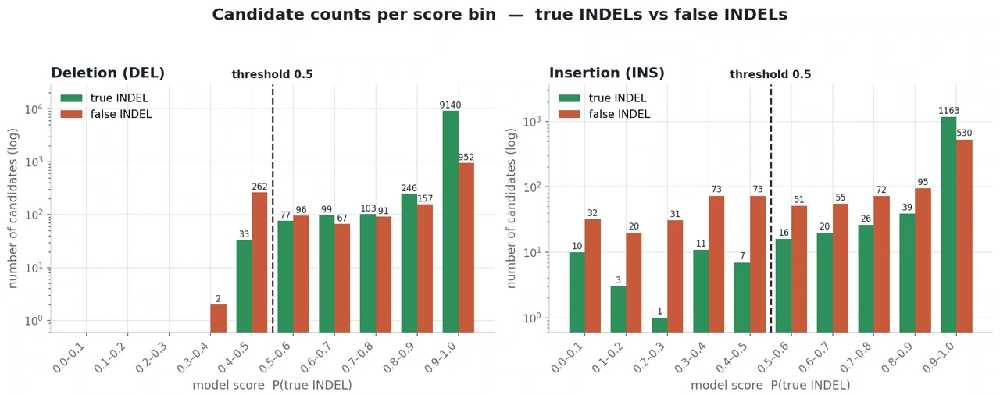

模組 10 · Evidence and benchmarking
證據、驗證與效能評估
從 precision、recall、F1、資料來源與參考標註品質，系統性評估效能結果與適用範圍。
本模組學習目標
- 批判性解讀效能圖，而非僅依最高長條判斷
- 解釋為什麼 precision 明顯上升時 F1 可能幾乎不動
- 說明 truth set 之間的可靠度差異，以及 LongPhase-S 以加權方式處理它的做法
- 指出 data leakage、distribution shift 與 label noise 各自的徵兆
為什麼重要
後續閱讀的論文通常會包含多張長條圖與折線圖。 判讀圖表未呈現的資訊，是研究與工程實務中的重要能力。
本節的目標不只是計算 F1，也包括培養批判性解讀與驗證能力。
本模組的數字來自兩項工作
下面會反覆引用兩組具體結果。它們是不同的方法、處理不同的問題，先在這裡分清楚， 後面提到時就直接用名字稱呼：
| 名稱 | 它是什麼 | 本模組用它示範什麼 |
|---|---|---|
| indel 精修模型 | 接在 somatic caller 後面的一個後處理模型。它把每個候選 indel 周圍的 pileup 編碼成一張影像，再用卷積神經網路（CNN）判斷這個候選是真的還是假的。 輸入是配對 tumor–normal 的 long-read 資料。關鍵性質是：它只會刪掉候選，不會生出新的候選。 | precision 上升而 F1 幾乎不動的原因、模型選擇該用什麼分數、 以及兩個長得一樣卻標記相反的候選 |
| LongPhase-S 的 purity 估計 | 由樣本本身估計腫瘤比例，再依估計值調整過濾參數。方法本身在 M12 展開， 這裡只借它的評估設計。 | 交叉驗證要以什麼為單位切分、benchmark 可靠度不同時怎麼加權 |
第一項的那句「只會刪掉候選」，是本模組第一個要拆解的東西 —— 它替所有後處理方法設下了一個效能上限。
概念與互動
先釐清三項指標
| 指標 | 計算公式 | 所代表的問題 | 僅移除候選的後處理如何影響 |
|---|---|---|---|
precisionprecision 精確率所有 calls 中實際為真陽性的比例：TP / (TP + FP)。後處理常以提升此指標為目標。Of the calls you made, the fraction that are correct: TP / (TP + FP).完整條目 → | TP ÷（TP+FP） | 所報變異中屬於真陽性的比例 | 通常上升（移除 FP） |
recallrecall 召回率在指定評估範圍內，所有真陽性中被找出的比例：TP / (TP + FN)。若只對固定的 caller 候選集做後處理，recall 只能維持或下降，不能恢復 caller 從未輸出的真陽性；報告時應說清楚這個候選集範圍。Within a stated evaluation scope, the fraction of true positives that were found: TP / (TP + FN). With a fixed caller candidate set, post-filtering can preserve or lower recall but cannot recover variants the caller never emitted; report the candidate-set scope explicitly.完整條目 → | TP ÷（TP+FN） | 所有真陽性中被找出的比例 | 至多維持，可能下降 |
| F1F1precision 與 recall 的調和平均。當資料裡 FN 遠多於 FP 時，precision 的改善對 F1 的影響有限 —— 見 M10。The harmonic mean of precision and recall. A precision gain has little effect when false negatives dominate the evaluation.完整條目 → | precision 與 recall 的調和平均 | 兩項指標的綜合表現 | 依 TP、FP、FN 的變化而定 |
第三欄的條件限定上述結論。在固定 caller 候選集合且後處理僅移除候選時，recall 至多維持，若誤刪 TP 則可能下降。 caller 未產生的候選不會由此恢復；若後處理包含 re-calling 或 assembly，則需另行評估。
觀察 precision 與 F1 的差異
truth settruth set 標準答案集評估用的參考標註。可靠度依資料來源與建立方法而異，困難區域可能包含標註錯誤。The reference labels used for evaluation. A truth set is not infallible truth: reliability varies, and hard regions can contain label errors.完整條目 → 並非無誤的標準
評估需要參考答案；不同資料來源的標註可靠度可能存在差異：
| 來源 | 形成方式 | 可靠度評估 |
|---|---|---|
| SEQC2 | 多平台、多中心的共識計畫 | 需依變異類型與區域評估 |
| NYGC | 單一機構產生 | 需依驗證設計評估 |
| Google（orthogonal tools） | 多個工具交叉比對的共識 | 需確認工具獨立性與共識形成方式 |
LongPhase-S 在搜尋過濾參數時， 依不同 cell line 的 benchmark 可靠度乘上相對應的權重。 此設計可能減少 benchmark 差異的影響，但比較不同論文的數字時，仍應確認 truth set 與加權方式是否一致。
另一項常被忽略的限制是 high-confidence regionhigh-confidence regionbenchmark 建立者指定的高可信度區間，通常以 BED 檔表示；區間外不宜視為具有相同標註可靠度。Intervals that benchmark authors consider reliable, usually supplied as a BED file. Results outside those intervals should not be assumed to have the same label reliability.完整條目 →。 benchmark 通常附一個 BED 檔，標示「我們有把握的區間」。 區間外的標註信心通常較低，結果不宜直接解讀，除非有其他獨立驗證。
三項可能造成評估偏差的因素
| 因素 | 可能徵兆 | 本例的處理 |
|---|---|---|
| data leakagedata leakage 資料洩漏訓練或模型選擇階段取得了評估資料的資訊，讓效能被高估。實驗室的做法是按染色體切分，確保同一個位點不會同時出現在訓練、驗證與最終測試中。Evaluation information entering training or model selection and inflating performance. The lab splits by chromosome so a locus cannot appear in training, validation and final test partitions at once.完整條目 → | 測試效能異常偏高 | indel 精修模型按染色體切分：chr2 與 chr8 僅用於驗證；仍需檢查樣本與位點是否跨 split |
| distribution shiftdistribution shift 分布偏移測試資料的組成與訓練資料存在顯著差異（例如正負樣本比例不同），使得模型表現不如預期。Test data differing in composition from training data, so measured performance does not transfer.完整條目 → | 訓練與測試的類別或特徵分布不同 | indel 精修模型的訓練集 FP 佔 4%、測試集佔 19%，因此不能只看 loss |
| label noiselabel noise 標籤雜訊訓練或評估標籤與真實狀態不一致的情況。在 homopolymer 與重複區域可能較常見；特徵相近的位點也可能得到相反標籤。Errors in the labels themselves. They can be more frequent in homopolymers and repeats, where near-identical sites may receive different labels.完整條目 → | 特定類別的表現持續受限 | 特徵相近的兩個位點被賦予相反標籤，提示可能存在標註不確定性 |
最後一項可由具體案例說明。下面並列 indel 精修模型送進 CNN 的兩張影像 —— 也就是兩個 deletion 候選各自的 pileup 編碼：一個是 true positive（模型給 0.997）， 一個是 false positive（0.994）。 兩者的 tumor reads 都顯示集中一致的 deletion，normal reads 未見相應支持。 就這種影像編碼呈現的特徵而言，兩個候選近似。

該工作的結論是：在這種影像輸入下，這兩類候選沒有可辨識的差異。這類位點常落在 homopolymer 或 tandem repeat 區域， benchmark 標註的不確定性可能較高；若要判定 label noise，仍需獨立 truth 或重複實驗支持。
合成 DNA fraction 混合樣本及其適用範圍
常用流程假設來源 tumor BAM 接近純腫瘤，再依指定比例與 normal BAM 混合。 此流程可產生預先設定的 DNA／read fraction，作為近似真值；但來源樣本的純度、輸入深度、每細胞 DNA 量與拷貝數仍需校正， 實際細胞株也可能包含少量正常或異質細胞。
因此「在標示為 purity 0.2（或 DNA fraction 0.2，依研究定義）的樣本上誤差小於 10%」應完整表述為「在以此方式合成的樣本上」； 結果僅適用於該合成方式與來源樣本前提。
真實證據
用對的指標選模型
indel 精修模型有一項值得注意的模型選擇設計：它不取 validation loss 最低的那個 epoch 當最佳模型。
理由是 loss 反映所選損失函數（例如 cross-entropy）的平均目標，不必然等同於分類錯誤率； 若任務目標是「在盡量保留真 indel 的前提下，篩掉更多假的」， 兩者不是同一件事。
因此它改用以下任務導向分數挑 epoch：
score = (成功移除的 FP − λ × 誤刪的 TP) ÷ FP 總數λ 由 benchmark 與驗證集的正負比例估計，而非人工指定（該資料約為 1.45）； 應同時說明估計資料、FP 總數為零時的處理，以及權重敏感度。
核心原則
模型選擇的標準應與任務目標對齊，而不必與 loss 最小化完全相同。 此原則適用於 variant calling 以外的應用 ML 任務。
本例交叉驗證以樣本為分割單位
LongPhase-S 用 leave-k-out 交叉驗證評估 purity 模型， 每次留下 1 或 2 個 cell line 當測試集。結果 MAE 約 4%、R² 約 0.95。
這種做法叫 cross-validationcross-validation 交叉驗證輪流保留資料子集作為驗證折，用來估計模型的泛化能力與選擇設定；這些折是 validation，不是最終 test。最終測試集應在模型與設定確定後才使用，並另行保留。Repeatedly holding out validation folds to estimate generalisation and choose model settings. The folds are validation data, not the final test; an untouched final test set is used only after the model is fixed.完整條目 →。此處保留 cell line 作測試，有助於評估跨樣本的泛化能力。 若同一 cell line 的高度相關位點同時出現在訓練與測試中，可能造成 data leakagedata leakage 資料洩漏訓練或模型選擇階段取得了評估資料的資訊，讓效能被高估。實驗室的做法是按染色體切分，確保同一個位點不會同時出現在訓練、驗證與最終測試中。Evaluation information entering training or model selection and inflating performance. The lab splits by chromosome so a locus cannot appear in training, validation and final test partitions at once.完整條目 → 或效能高估。
先提出預測，再查看解答
一篇論文說：「我們的方法把 precision 從 0.72 提升到 0.89。」
請列出解讀此結果時應先確認的三項資訊。
展開答案
依重要性排序：
- recall 如何變化？若只報 precision 而不報 recall，可能遺漏門檻調整造成的取捨。 提高門檻通常會提高 precision，但可能只保留少量 calls。
- 在哪個資料集、用哪一份 truth set？Google 的 orthogonal-tools 共識與 SEQC2 的標註範圍與難度可能不同；是否限制在 high-confidence regionhigh-confidence regionbenchmark 建立者指定的高可信度區間，通常以 BED 檔表示；區間外不宜視為具有相同標註可靠度。Intervals that benchmark authors consider reliable, usually supplied as a BED file. Results outside those intervals should not be assumed to have the same label reliability.完整條目 → 內，也可能造成明顯差異。
- 測試資料是否參與閾值選擇或調參？若門檻在同一批測試資料上挑選，0.89 可能是 test-set overfitting 的樂觀估計，不代表泛化效能。
若資料可得，另應確認絕對數量是多少？ precision 從 0.72 到 0.89，如果 TP 只有 20 個，那可能只是移除了少數幾個 FP， 統計不確定性可能較高；若未提供分母，比例的精確度難以評估。
實作練習
以標準化流程評估效能
除非已處理 variant normalization，否則不建議自行實作比對； 同一個 indel 可能有多種等價表示，多等位與複雜變異也需要額外處理。可使用專門工具：
# SNV / indel 的常用評估工具（hap.py）
docker run -v $(pwd):/data pkrusche/hap.py /opt/hap.py/bin/hap.py \
/data/truth.vcf.gz \
/data/query.vcf.gz \
-f /data/high_confidence_region.bed \
-r /data/reference.fasta \
-o /data/result-f 是關鍵參數之一：它限制在 benchmark 信心較高的區間內評估。
未限制區域時，應分層報告並說明標註信心，否則結果難以直接解讀。
解讀效能數字時的四項檢核
解讀效能數字時，可依序確認：
- 另一個指標呢？若只報 precision，應同時檢視 recall 的變化。
- 在哪個資料集、用哪一份標準答案、有沒有限制在高信心區間內？
- 測試資料是否參與過調參？若門檻在同一批測試資料上挑選，結果可能是對該資料集過度擬合的估計。
- 絕對數量是多少？precision 從 0.72 到 0.89，如果 TP 只有 20 個，統計上不穩定。
檢查訓練／測試資料是否存在洩漏
# 檢查訓練與測試的染色體名稱是否重疊（僅為初步檢查）
cut -f1 train_sites.tsv | sort -u > /tmp/train_chr
cut -f1 test_sites.tsv | sort -u > /tmp/test_chr
comm -12 /tmp/train_chr /tmp/test_chr # 有輸出表示染色體名稱重疊，仍需檢查座標與樣本
# 比較訓練與測試的類別比例
awk '{c[$NF]++} END {for (k in c) print k, c[k]}' train_sites.tsv
awk '{c[$NF]++} END {for (k in c) print k, c[k]}' test_sites.tsv類別比例差異會影響評估：若訓練集的假陽性佔 4%、測試集佔 19%， 兩組資料的類別分布不同，不宜僅以 loss 判定模型優劣；仍應檢查其他特徵與品質分布。
學習檢核
本模組術語
- F1
- precision 與 recall 的調和平均。當資料裡 FN 遠多於 FP 時，precision 的改善對 F1 的影響有限 —— 見 M10。
- cross-validation（交叉驗證）
- 輪流保留資料子集作為驗證折，用來估計模型的泛化能力與選擇設定；這些折是 validation，不是最終 test。最終測試集應在模型與設定確定後才使用，並另行保留。
- data leakage（資料洩漏）
- 訓練或模型選擇階段取得了評估資料的資訊，讓效能被高估。實驗室的做法是按染色體切分，確保同一個位點不會同時出現在訓練、驗證與最終測試中。
- distribution shift（分布偏移）
- 測試資料的組成與訓練資料存在顯著差異（例如正負樣本比例不同），使得模型表現不如預期。
- high-confidence region
- benchmark 建立者指定的高可信度區間，通常以 BED 檔表示；區間外不宜視為具有相同標註可靠度。
- label noise（標籤雜訊）
- 訓練或評估標籤與真實狀態不一致的情況。在 homopolymer 與重複區域可能較常見；特徵相近的位點也可能得到相反標籤。
- precision（精確率）
- 所有 calls 中實際為真陽性的比例：
TP / (TP + FP)。後處理常以提升此指標為目標。 - recall（召回率）
- 在指定評估範圍內，所有真陽性中被找出的比例：
TP / (TP + FN)。若只對固定的 caller 候選集做後處理，recall 只能維持或下降，不能恢復 caller 從未輸出的真陽性；報告時應說清楚這個候選集範圍。 - truth set（標準答案集）
- 評估用的參考標註。可靠度依資料來源與建立方法而異，困難區域可能包含標註錯誤。